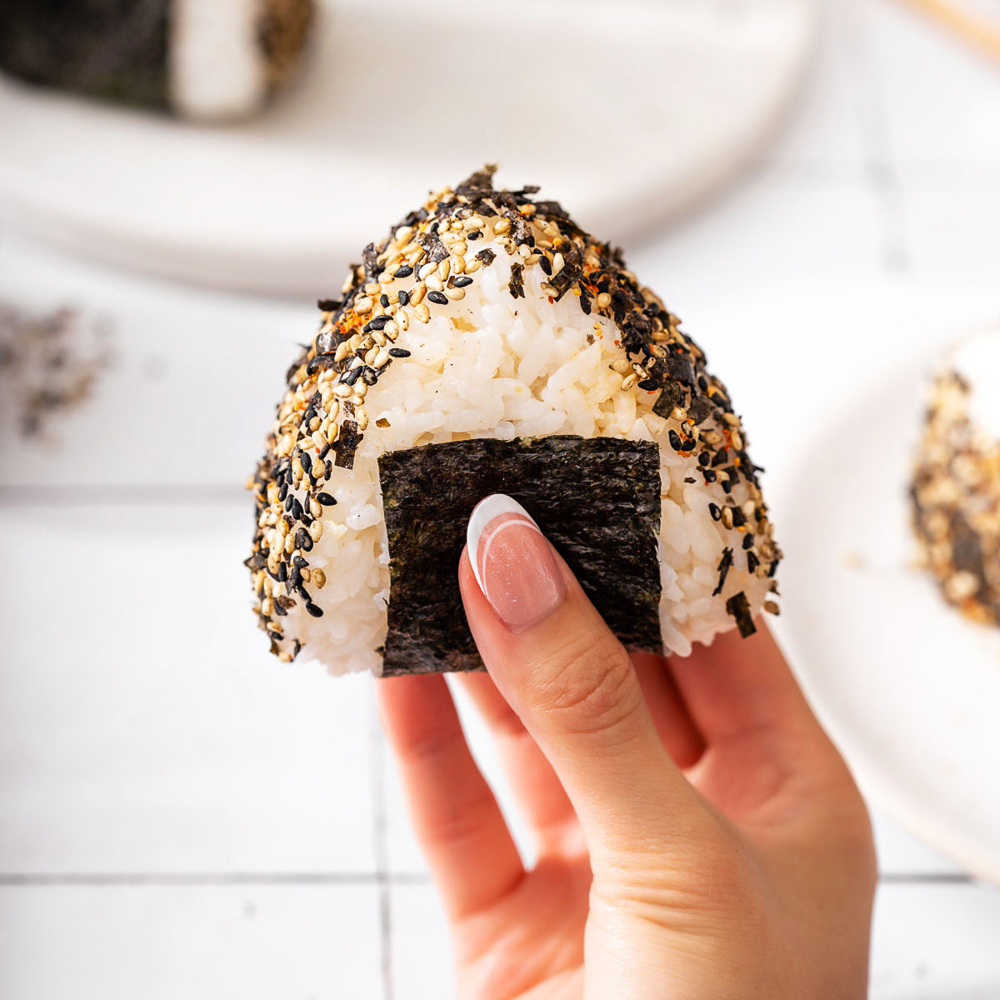

Onigiri

Desciption
Onigiri is a triangle shaped rice ball, usally filled with a kind of spicy or sweet meat. This dish will be filled with a spicy salmon, a creamy yet savory flavor, topped with furikake gives the dish a salty tasty yet sweet and spicy amazing flavor.
Ingredients
- Rice
- Furikake
- Salmon
- Japanes Mayo
- Unagi
- Rice Viniger
- Sugar
- Hot Saouce
Steps
- Cook the rice.
- After rice is cooked, mix with rice viniger and a little sugar.
- Let rice cool while making the filling.
- Cook the fish.
- Break the fish up and add mayo, unagi, and hot saouce.
- Now that the rice has cooled, start putting rice on a plate to flatten and put a good scoop of filling.
- Do your best to close the onigiri, it might be a little hard.
- Shape into triangle.
- Top with furikake.
- Eat cold or heat them up and enjoy them warm.